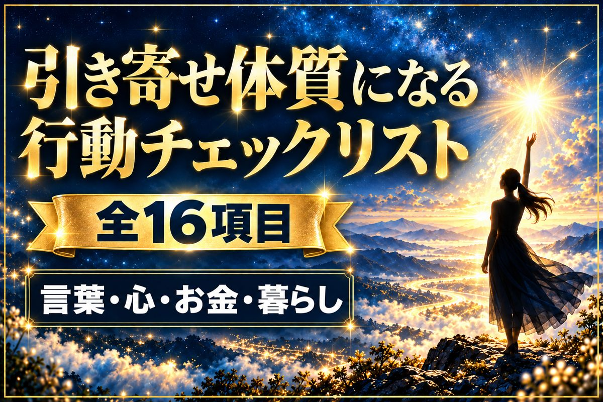
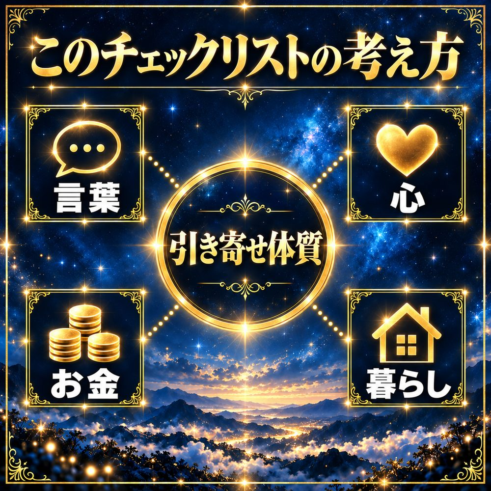

秘密の花園 参加特典 ①
今日できた物に、チェックをつけていくだけ。
言葉・心・お金・暮らしの4つから、少しずつ引き寄せ体質に近づいていきます。
今日 0/16チェックした日 0日

言葉・心・お金・暮らしの
4方向から、少しずつ
引き寄せ体質になっていく。
できた日だけ、数えればいい。
チェックを
続ける3つのコツ
- 全部やろうとしない16個の中から、できそうな物を3つだけ選ぶ。まずはその3つで十分です。
- できた日に、印をつけるこのページは、チェックした日を自動で数えます。数字が増えるのを、楽しんでください。
- できなかった日は、気にしない1日空いても、また明日から。自分を責めないことも、引き寄せのうちです。
今日できそうな1つから、
始めてみてください。
試してみて、どんな変化があったか
ぜひ聞かせてください。
公式LINEのトークでも、オプチャでも。
届いた声は、ひとつひとつ大切に読んでいます。
もっと早く、自分専用の叶え方が知りたい人へ
パーソナル
引き寄せロードマップ
チェックリストは、誰でも今日から始められる習慣です。そのうえで「自分の場合は、何から、どの順番でやればいい？」を知りたい人のために、あなた専用のロードマップをお作りしています。
- 12問のヒアリングで、あなたの願いと今の状態をうかがいます
- 思考・行動・感情の3つの面から、叶いにくくしている原因を言葉にします
- やることを週ごとにまとめた、あなた専用のロードマップ（4,000字以上）
億り女ちゃん｜秘密の花園 参加特典